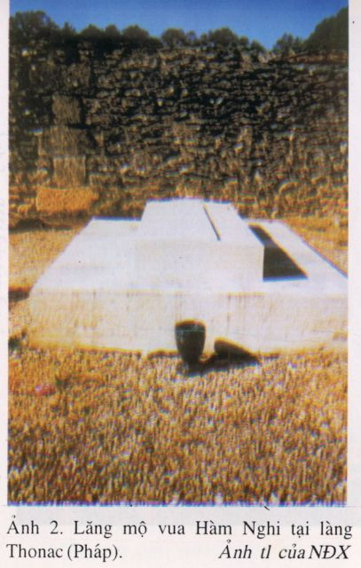

(......... )
Người ta quen gọi cụ là ông Hoàng An Nam ( Le prince d' Annam ). Cụ Hàm Nghi có hai gái, một trai. Cô chị Như Mân thạc sĩ canh nông, không lấy chồng để " trọn đời tưởng nhớ ba tôi ". Như Lý lấy một đại tá không quân dòng dõi Hoàng tộc Bỉ. Minh Đức là con út, đại tá chiến xa trong quân đội Pháp, khi cụ mất được gọi về. Còn hai chị ở Canne, lâu đài De Cosse, không sang chịu tang được vì Pháp đang bị Đức chiếm đóng.
Cụ tặng tôi một bức tranh thủy mạc mực Tàu có đề thơ và một thanh bảo kiếm.
Cụ quan tâm theo dõi tình hình đất nước, thường băn khoăn chưa tìm ra được kế sách giúp ích gì cho Tổ Quốc. Chưa bao giờ cụ nhắc lại quá khứ lịch sử mà chỉ hỏi tôi về đất nước, dân tình, về phong trào và triển vọng. Có lần cụ hỏi tôi về cụ Nguyễn Ái Quốc, nào tôi có biết được là bao! Cụ hỏi tôi về Bảo Đại. Tôi khá rõ Bảo Đại là tay thiện xa cưỡi ngựa, giỏi tiếng Pháp hơn tiếng mẹ đẻ và rát thạo khiêu vũ. Nghe tôi kể, cụ cười nhẹ:" Nó là con rối ". Đó là nụ cười hiếm hoi. Trong bốn năm tiếp xúc với cụ, có lẽ mới thấy cụ chỉ cười đôi ba lần, lại là cái cười châm biếm, mỉa mai....
Cụ sống giản dị, quần áo đều tự may lấy theo kiểu cổ Việt Nam. Cụ để búi tóc củ hành cho tới khi mất. Suốt những năm tháng đó cụ quên mình trong điêu khắc, hội họa, âm nhạc. Nhiều lần triển lãm mỷ thuật họ mời cụ tham gia tác phẩm, cụ đều từ chối. Cụ soạn hoặc vẽ là để nung nấu tâm hồn u uất và thất vọng. Cụ chỉ đàn khi nào lâu đài mênh mông kia không một bóng người. Có lần tôi đến thăm thấy cụ đang say sưa đàn. Hình ảnh một cụ già rất Việt Nam thấp thoáng bên dương cầm bóng lộn khiến tôi liên tưởng đến ông nội tôi hay một cụ đồ nho khom lưng viết câu đối Tết. Tôi dốt âm nhạc, chỉ nghe thấy cây đàn khi nức nở thánh thót, khi bão bùng. Dứt tiếng đàn, cụ giang rộng hai tay đặt trên cây đàn đăm đăm suy nghĩ.
Tâm hồn cụ đang bay bổng theo tiếng đàn và đất nước quê hương chăng?
Cụ không có bạn, ít muốn tiếp xúc với ai. Một lần vợ chồng toàn quyền Catroux, lần khác tướng Givand Tổng thống lâm thời Pháp với De Gaulle, đến thăm, cụ đều thoái thác đi vắng, cho tôi thay mặt tiếp. Cụ nói:
- Họ đến với tôi vì tò mò.
Bà Foltz là người bạn duy nhất của cụ. Hình như số mệnh đã dă1t bà đến với cuộc đời ảm đạm của cụ Hàm Nghi; bà là niềm vui, là chút ánh sáng trong cuộc sống hằng ngày của cụ.
Bà Foltz kém cụ mười lăm tuổi, cháu ngoại dòng chính thống De Bourbon. Ông thân sinh ra bà là một nhân vật tăm tiếng ở Thụy Sĩ. Bà là một nhà văn. Người ta không hiểu được sức mạnh nào đã lôi cuốn bà ra khỏi chiếc lâu đài cổ kính, đồ sộ nhất Thụy Sĩ mà bà thừa kế, để sang Alger này, ngày hai buổi đến dùng trà và chăm sóc sức khỏe của cụ Hàm Nghi.
Tình yêu chăng? Tôi được bà thương yêu như con, cũng chưa bao giờ bà hé nửa lời tâm sự. Sự cách biệt về tuổi tác, nhất là lòng mến yêu của bà không cho phép tôi được nghỉ đến điều đó. Bà Foltz chỉ nói sơ qua là bà gặp cụ ở Londres và bà sang ở Alger.
Chớ đụng đến nước An Nam và người An Nam trước mặt bà! Trong một buổi tiệc trà, mụ vợ toàn quyền Catroux muốn lấy lòng bà đã ca ngợi hết lời xứ An Nam văn minh:
- " Tôi kính cẩn nghiêng mình trước dân tộc An Nam " ( Je minchine devant la race Annamite ).
Tiệc tan, tôi nói với bà Flotz:
- Khi vợ chồng Catroux ở Đông Dương, chúng đã giết hại hàng ngàn người ".
Bà nổi giận ra lệnh ngay cho cô quản gia ( gouvernante ) Lola xóa tên mụ trong danh sách khác mời đến dự tiệc của gia đình.
Tôi không rõ được xu hướng chính trị của bà thế nào, có lẽ xu hướng duy nhất là tình người, là lòng nhân đạo, là lẽ phải ( bon sens). Bà phẫn nộ khi tôi kể lại tình cảnh sống dở, chết dở của người dân Đông Phương.Thực ra bà còn hiểu biết hơn tôi. Chính bà đã lục trong tủ sách của cụ Hàm Nghi đưa tôi cuốn Bản án thực dân Pháp ( Proces de la colonisation Française) của ông Nguyễn Ái Quốc và Đông Dương cấp cứu của bà Andrée Violla. Bà còn đưa một cuốn, không phải có phải Con Rồng Tre không, tôi đã bỏ qua không đọc, vì thấy một bản in litô nhòe nhoẹt, cho là chuyện tầm thường, chỉ nhớ mang máng ngoài bìa có một khóm tre có những chử to đậm nét như những lóng tre thôi. Nếu đúng là Con Rồng tre thì đáng tiếc vô cùng. Vào năm 1945, bà đưa cho tôi một trang phụ lục báo đăng chi chít ảnh chụp cảnh chết đói của nước ta hồi đó. Bà hỏi tôi:
-" Anh muốn gì? Cần tiếp xúc với ai, khó khă, mấy tôi cũng làm hết mình, miển là có thể đem lại điều gì tốt lành cho đất nước anh".
(..... )
Tôi nghĩ, chính cuộc đời sóng gió, lòng yêu nước và đức độ của cụ Hàm Nghi đã cảm hóa bà, bà đứng hẳn về phía Việt Nam, càng sâu đậm
(......)
Cụ không còn nữa! Chỉ còn một nấm mộ hoang tận phía trời xa. Mỗi lần qua phố Hàm Nghi, tôi lại thầm ước vọng, nếu như nắm xương tàn của cụ được trở về với núi Ngự sông Hương, tưởng cũng xứng đáng và an ủi phần nào mảnh hương hồn của con người phí phách ấy
( Trích Những ngày cuối cùng của vua Hàm Nghi - Nguyễn Hải Âu )
